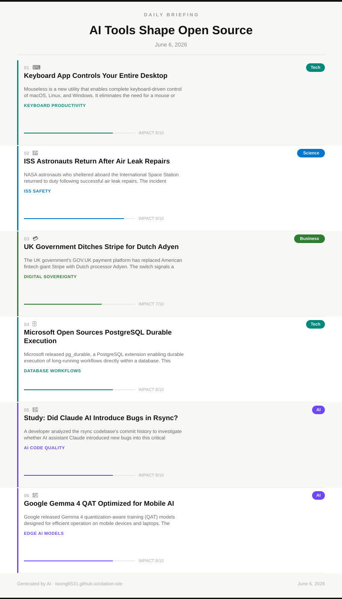

Visual summary of today's most impactful tech and world stories, curated from Hacker News and Google News.
The S&P 500 has refused to fast-track SpaceX's entry and confirmed it will also block OpenAI and Anthropic from rapid inclusion. The decision upholds profitability and public float requirements that these high-profile tech companies currently don't meet.
Why it matters: This shapes how trillions in index-tracking funds flow — or don't — to the most powerful AI companies of our era.
University of Rochester researchers developed a desalination method that converts seawater to drinking water with zero brine waste. Traditional plants reject 50-60% of water as harmful concentrated saltwater discharged back into the ocean.
Why it matters: Waste-free desalination could transform global water access while eliminating the environmental damage caused by brine discharge.
Apple's WWDC 2026 is set to reveal Siri upgraded with Google's Gemini AI, alongside iOS 27 and macOS 27. The partnership signals Apple's strategy of integrating third-party AI models to compete with ChatGPT's assistant dominance.
Why it matters: A Gemini-powered Siri places a top AI model on 2 billion Apple devices, immediately reshaping the competitive AI assistant landscape.
Microsoft's AI chief stated the company feels 'set free' from its OpenAI partnership to independently pursue superintelligence. This marks a strategic pivot emphasizing Microsoft's own frontier model research over dependence on OpenAI's GPT series.
Why it matters: Microsoft's declaration of AI independence signals a fracturing of tech's most influential AI partnership and accelerates the superintelligence race.
A deep-dive technical article on how large language models function attracted 591 upvotes on Hacker News, reflecting enormous public appetite for AI literacy. The piece covers tokenization, transformers, attention mechanisms, and inference in accessible terms.
Why it matters: Public understanding of AI internals is essential for informed regulation, responsible use, and separating hype from capability.
Microsoft unveiled Azure Linux Desktop at Build 2026, merging WSL, WinUI, and Azure cloud tools into a seamless Linux experience on Windows. The announcement signals Microsoft's deepening commitment to unifying developer workflows across platforms.
Why it matters: A native Linux desktop on Windows could finally unify enterprise developer workflows across local machines and cloud environments.
{kind=link}